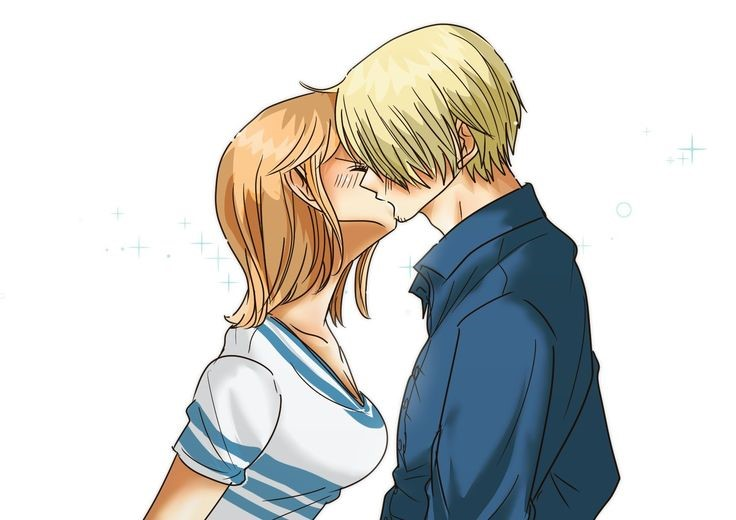

Happy Anniversary, Sayang.
Sebelum nya aku pengen ngucapin terima kasih sama kamu, cause selama satu tahun ini kamu udah memberikan rasa Bahagia di setiap waktu kegiatan ku entah sama kamu atau ga lagi sama kamu, thanks karena sudah bertahan sejauh ini bersamaku, si keras kepala, ngeyelan, kalo dibilangin nyepelein, ceroboh dan juga susah banget diatur. sayang, kamu pemenang dari semua yang datang dan kamu juga yang mampu bertahan sejauh ini bersamaku, kita berhasil mempertahankan hubungan kita sejauh ini, kita berhasil saling menjaga kepercayaan dan kesetiaan. sayang aku sangat bersyukur bisa memilikimu sampai saat Ini, aku senang kamu menjadi bagian dari hari-hariku, kamu support system terbaikku, aku sungguh mencintaimu.
Harapanku tentang kita adalah saling mempertahankan satu sama lain, saling percaya satu sama lain, berjuang bersama sampai impian yang kita rencanakan tercapai. maaf jika sejauh ini aku belum bisa menjadi apa yang kamu mau, maaf jika aku sering kali egois tentang sesuatu, maaf aku belum bisa mengajak kamu ke suatu tempat yang istimewa, jangan pergi ya sayang jangan pindah ke lain hati jangan nyerah sama hubungan kita ya kamu adalah semangatku, kamu tempat pulang paling nyaman. kamu satu-satunya orang yang aku mau ajak kemanapun, kita wujudin wishlist bareng-bareng ya sayang. Aku ga mau kehilangan kamu, i love you most. Sekali lagi terima kasih sudah bertahan bersamaku, I love you more sayang.
